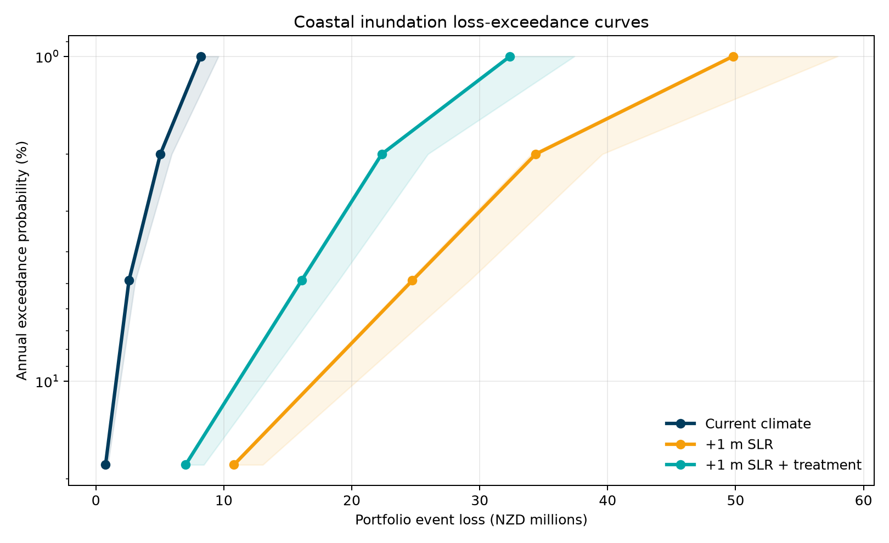

Auckland Natural Hazard Asset Risk Intelligence
Loss-exceedance comparison

Highest-priority assets under +1 m SLR
| Asset | Type | Local board | EAL | Risk band |
|---|---|---|---|---|
| Central Toilet and Changing Room - Whlm | Toilet/Changing | Rodney | $75k | Very high |
| Changing room area | Changing Shed | Franklin | $61k | Very high |
| Changing Room | Changing Shed | Orakei | $61k | Very high |
| Changing room area | Changing Shed | Franklin | $61k | Very high |
| Changing Room-(huia Domain) Bch Front | Changing Shed | Waitakere Ranges | $61k | Very high |
| Change Room | Changing Shed | Mangere-Otahuhu | $61k | Very high |
| Changing Rooms - Middle Of Domain | Changing Shed | Orakei | $61k | Very high |
| Toilet - W32 (Eric Armishaw Park) | Public Toilet | Albert-Eden | $42k | Very high |
| Toilet - W4 Heritage Toilet/change | Public Toilet | Whau | $42k | Very high |
| Toilet - W3 Novaloo (Bhb Beach) | Public Toilet | Whau | $42k | Very high |
Interpretation
The model joins public asset points to four coastal-inundation frequencies, converts exposure to financial loss using explicit vulnerability assumptions, and propagates replacement-value and damage uncertainty through 10,000 Monte Carlo iterations. A separate Council liquefaction layer adds non-financial seismic screening, while AGS23v1.1 supplies planning context.
Under the central demonstration assumptions, the conditional intervention screen has a benefit-cost ratio of 1.65.
Important: Replacement values, damage functions, intervention costs and treatment effects are illustrative assumptions, not Auckland Council financial data or engineering estimates. Liquefaction is a regional vulnerability screen, not property-level earthquake risk. Growth does not multiply loss. This prototype is not an engineering, valuation, insurance, regulatory or investment decision.